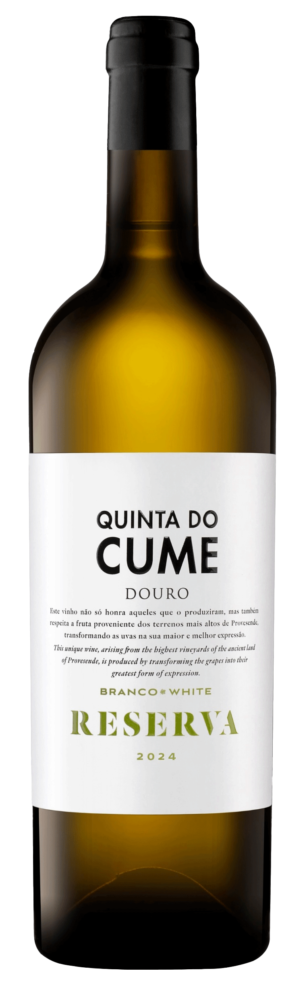
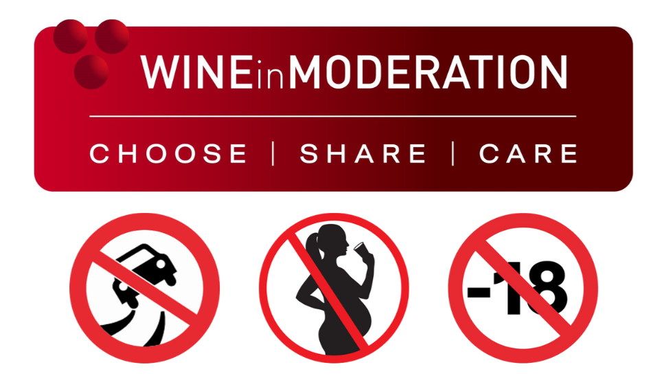

Reserva Branco 2024

Informação do Produto
- Tipo de produto: Vinho Reserva
- álc.: 13% vol
- Ano vintage: 2024
- Teor de açúcar: Seco
- Cor do vinho: Vinho Branco
Ingredientes
- Uvas: Rabigato, Viosinho e Gouveio
- Sulfitos (dióxido de enxofre)
Declaração Nutricional (por 100 ml)
| Valor energético |
330 kJ / 79 kcal |
|
Lípidos
|
0 g
0 g |
|
Hidratos de carbono
|
0,9 g
< 0,1 g |
| Proteínas |
< 0,2 g |
| Sal |
< 0,01 g |
